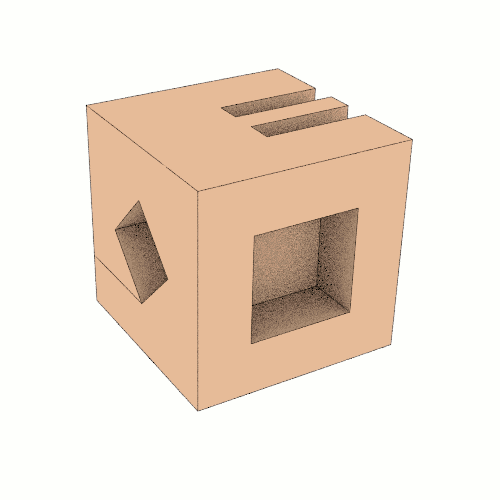
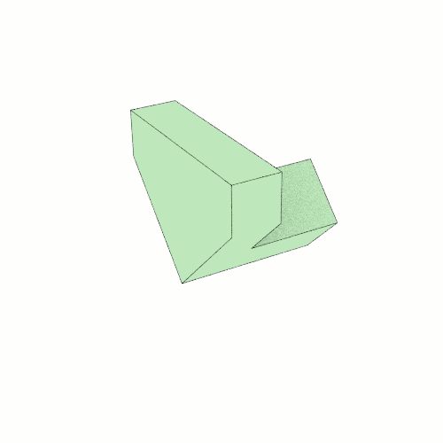
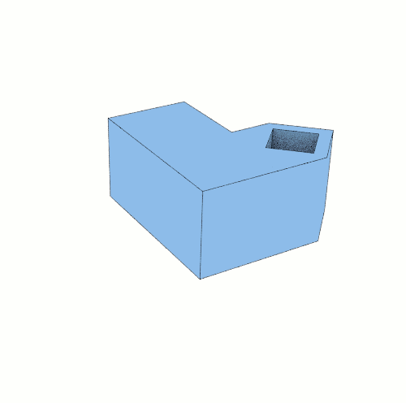
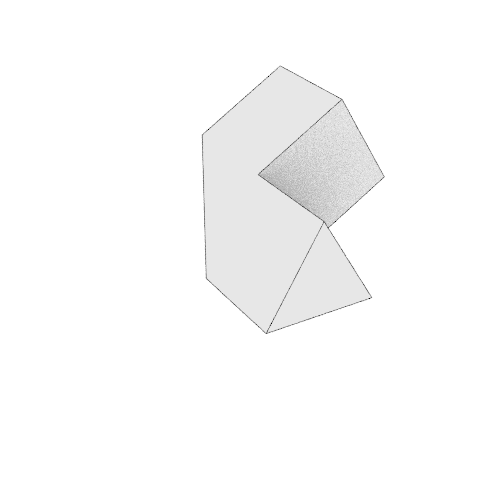

-
Core Module Basic
 Learn More
About
The Beautiful Nation Project (BNP) is an experiential learning project designed to connect students with Earth and each other. Its mission is to teach and promote global citizenship.
BNP presents life from the vantage point of the sea to help bring its mission to life. We are a crew of women, educators, scientists, artists and explorers - citizens of the sea - a limitless, beautiful nation without borders and the hindering politics of mankind. Traveling around the globe by sailboats, ships, and marine research vessels - theVoyage of Makulu is our collective journey on the sea.
The Voyage of Makulu begins in the United State's coastal cities and makes its way towards the Equator to the coastal communities and delicate islands of the Caribbean, South Pacific and Asia. Our focus is on water, its ubiquity, and our interconnection as a result of water on planet Earth.
-
Wing Module
 Learn More
Bring the World Into your Classroom
The Beautiful Nation Project is a social networking experience for educators and students alike. When our journey begins, new opportunities for interactive story telling style content streaming to your classroom from our location at sea. We believe in the power of natural curiosity when creating curriculum and the educators who are following will be tapped into something magnificent and modular, making all of our reports mixable and mashable. We may invent new words along the way, while promoting experiential learning. By definition, BNP is a geosocial network. Our content and activity is all geo-related. Everything and everyone are linked by their geographic location in the world.

The network houses resources for educators and students. Articles, photos and videos produced by the Voyage of Makulu crew, along side real-time communication tools, maps, games and activities, offer ways for students to engage with the crew and each other in real-time, about real global issues.
Articles are filtered into subject-specific sections of the network, called Channels. By subscribing to a specific Channel, your classroom can engage in online discussions and videocalls with the crew and each other about content posted in the Channel.
-
Holder Module
 Learn More
One World. One Map
The Beautiful Nation Project is a resource specifically designed to help build student engagement and geographic literacy.

Educators can take their students on a real global journey by tracking the Voyage of Makulu. The journey will introduce students to new ideas, cultures and ways of living around the globe by introducing real people, and other students living in the locations visited by the crew!
The Voyage of Makulu crew content meets Grades 2-8 Literacy Levels with its digital media stories. Free resources are available to help educators with:
-Mapping the crew's content to the Common Core criteria for success
-Developing Hands-on Science Activities
-Planning and Implementing a Virtual Science Fair
Visit the Teacher Tech Channel to learn more about the tools available to educators through the Beautiful Nation Project's geosocial network for classrooms! -
Cube Basic
No Child Without Wonder
-
Square Arm
 Learn More
Base Module
-
Core Advanced
Learn More
Connector Module
-
Connector Module
Learn More
Duis tellus dui vehicula
-
Dynamic Module
Learn More
Ligula nulla tempus sem
-
End Module
Learn More
Ways to Donate and Get Involved